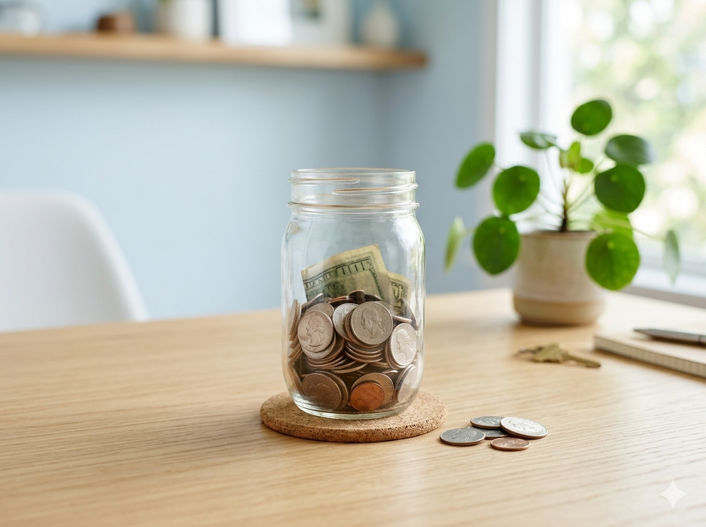
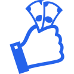

How to Build an Emergency Fund
You never know what can happen in life. An emergency fund is money you put aside so you have something to rely on when an unexpected situation comes up.

You never know what might happen.
Think about how you usually spend your money. You probably have bills to pay, food to buy, transportation, and other things that you already know you will need money for.
But what happens when something comes up that you were not expecting? You cannot plan for everything, and sometimes you need money when you least expect it.
It could be an injury, a problem at home, an unexpected bill, or something much bigger, like a pandemic or an event that affects many people. You might think these things will never happen to you, but you cannot know that for sure.
This is why having some money put aside can help. You do not need to know what the emergency will be. You just need to have something available if you ever need it.

You cannot know what will happen in the future, but you can start putting some money aside today.

Your emergency fund does not need a fixed target.
Now, when you create a normal savings goal, you usually have something specific in mind. Maybe you want a phone that costs €900, so you create a goal for €900.
An emergency fund is different. How can you know exactly how much money you will need for something that has not even happened yet?
Maybe one day you need €200 for an unexpected expense. Maybe another time you need much more. There is no way to know exactly what you will need, so you do not have to choose one final amount and tell yourself that you are finished once you reach it.
Instead, keep putting something aside whenever you can. Your emergency fund can keep growing over time, and the more you have saved, the more money you will have available if something unexpected happens.
You do not need to decide that your emergency fund is completed. Just keep building it as your situation allows.

Even a little can make a difference.
Maybe you are reading this and thinking that you do not have enough money to start an emergency fund. You have your own expenses, and there is not much left at the end of the month.
Well, you do not need to start with €500 or €1,000. If you can save €10, €20, or €30 a month, start with that. Of course, if you cannot save anything right now because you need all your money for essential expenses, do not put yourself in a worse situation just to save.
But if you can put a little aside, think about what that amount could become if you keep doing it.
Saving €20 might not feel like much when you do it once. But if you save €20 every month for a year, you will have €240. That is €240 you would not have had if you had never started saving.
And if you keep going for longer, you can build up even more. The important thing is to start when you can and continue whenever your situation allows it.

Your emergency fund does not need an end date.
When you save for something like a phone or a vacation, you probably have an idea of when you want to buy it or when you want to travel. You save toward that target, and once you reach it, you can use the money.
With an emergency fund, you do not really need to think that way. You are not saving for one specific purchase. You are putting money aside in case something unexpected happens.
So why would you need an end date? You can keep adding money to your emergency fund month after month. Some months you might save more, and other months you might save less. That is completely fine.
You do not need to build your emergency fund quickly. Just keep adding to it whenever you can.
What should your emergency fund be used for?
Now, just because you have money saved does not mean you should use it for everything. An emergency fund has a specific purpose. It is there for important, unexpected situations that would be difficult to deal with without some extra money.
For example, you might need money because of an unexpected injury, a serious problem at home, or a bill you did not know was coming. You cannot list every possible situation in advance, because the whole point is that you do not know what might happen.
The idea is simple: if something important happens and you need money, you have something available instead of having to start from zero at that moment.

Do not use your emergency fund for non-emergencies.
This is something you need to be careful about. When you have money sitting there, it can be tempting to use it whenever you want to buy something.
But remember why you started saving it. You wanted to have money available for an unexpected situation. If you keep taking money out for other things, you might find yourself without enough when you really need it.
For example, buying a new phone is not automatically an emergency. Even if your current phone breaks, you should think about what you actually need. Can it be repaired? Do you need to replace it immediately? Is there a cheaper option that will do the job?
If you want a new phone, a vacation, new clothes, or something else you have planned to buy, create a separate savings goal for it. Try not to use your emergency fund just because you do not want to wait until you have saved enough for that purchase.
Of course, every situation is different. The important thing is to think carefully about whether the expense is really an emergency before taking money out.

Using your emergency fund does not mean you failed.
Now, what happens if something really does happen and you need to use the money you have saved? Well, that is exactly why you created the emergency fund in the first place.
You are not supposed to keep that money untouched forever. You are saving it so you have something to rely on when you need it. If an unexpected expense comes up and using your savings helps you deal with it, then your emergency fund has done its job.
Imagine you had €1,000 saved and had to use €400 for an unexpected expense. You now have €600 left. You have less money than before, of course, but you also had money available when you needed it.
Once you have dealt with the emergency, you can start putting money aside again and rebuild your fund over time. You do not have to do it all at once.
Save a little, again and again.
Building an emergency fund does not mean you need to put a huge amount of money into it in one day. You can start small and add more whenever you can.
Think about it. If you put money aside only once and then never save again, your fund will stay at that amount unless you need to use some of it. But if you keep adding money, you give yourself a better chance of having more available when something unexpected happens.
There is no finish line. Every deposit adds to the money you have available for an emergency.
You might not notice a big difference after one month. But if you continue saving over a year or longer, those deposits can add up to an amount that could really help when you need it.

Save more when you can.
Of course, you will not always have the same amount of money available every month. Maybe you have a good month and can save €100. Another month, you might have more expenses and only be able to save €10.
Do not think that you are doing something wrong just because you cannot save the same amount every month. Your life and your expenses can change, so your savings can change too.
When you have more money available, you can save more. When things are difficult, put aside what you reasonably can, or focus on your essential expenses until your situation improves. You do not need to force yourself to save an amount you cannot afford.
The goal is to build a habit that works for your life, not to make saving another problem you have to worry about.
Be prepared for what you cannot predict.
You cannot predict every emergency that life can bring.
Your emergency fund does not need a fixed target.
You can keep building your emergency fund without an end date.
Even small amounts can add up over time.
Keep emergency savings for important, unexpected situations.
Try not to use emergency savings for planned purchases.
If you need to use the fund, you can build it again.
Save what you reasonably can and keep going when possible.
Building an emergency fund does not have to be hard.
Start putting something aside, track your savings, and keep building your emergency fund over time with RealSavings Tracker. It is free to use and gives you a simple way to keep your savings organized.
Start Saving for Free